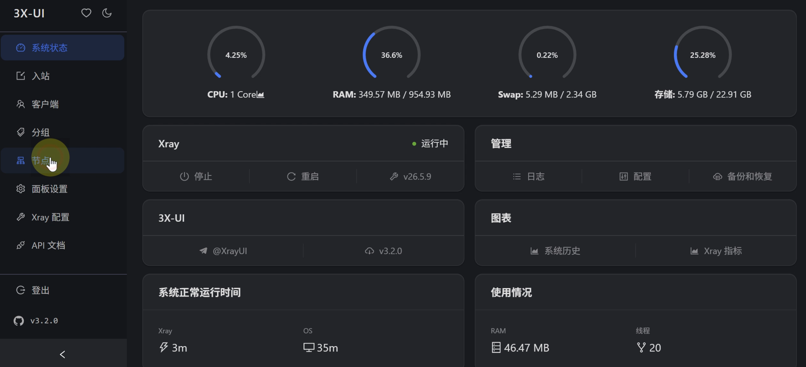
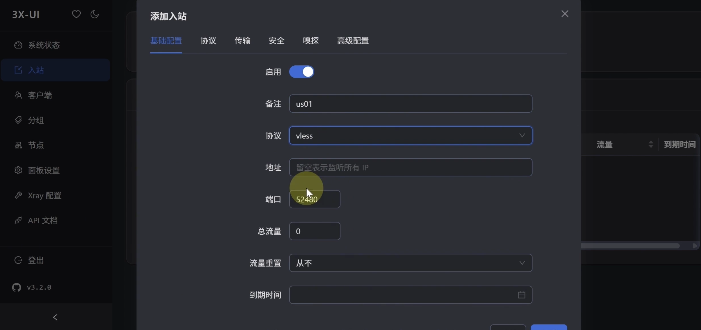

🕓2026年06月03日
视频教程：▶https://youtu.be/tL-SUy3T6Fw?si=diHpIBPU8zfVfnOs
手里的 VPS 越来越多，每次换节点、续流量都要挨个切网页、换账号登录，是不是头都大了？
最近老牌可视化面板 3X-UI 迎来了 V3.1.0的重磅更新！这次不仅重构了前端交互，更史诗级地上线了【分布式主控集群】和完全机场化的【多入站客户端管理】。
今天小露就带大家进行一场硬核实操：从 Vultr 服务器购买、Debian 12 环境配置、Cloudflare 域名解析，再到多台 VPS 跨国无缝合体！
当然，新版本虽然强，但小露在测试过程中也帮大家踩出了好几个极其隐蔽的“隐藏大坑”（比如订阅链接报错、TLS证书套用错误、端口未放行等），视频里都会一一为大家拆解和修复！
3X-UI开源项目地址:https://github.com/MHSanaei/3x-ui
3X-ui 面板更新

准备工作
1、域名一个，并托管到 Cloudflare
推荐在 Namesilo 进行购买（新用户1美元优惠券：kejixiaolu），因为他的 WHOIS 隐私 是免费的，可以适当的进行一下隐私保护，而且域名还都挺便宜的。（域名可以在 Namesilo 解析，也可以将域名托管到 Cloudflare ，解析更快。）
✰如果要开启 CDN 和申请证书，须将域名托管到 Cloudflare 。
2、境外 VPS 服务器。
六六云服务器：https://kjxl.cc/666clouds（双ISP，支持tiktok）
全站九折优惠：XL666
年付七折优惠：year30off
LightNode 服务器：https://kjxl.cc/LightNode（按流量计费）
Vultr 服务器：https://kjxl.cc/vultr （按时计费，最低5$/月。）
准备云服务器：
搭建前，先检测服务器IP是否被封，确认IP可用。
已经解析的域名，Win+R 输入 CMD 回车：键入ping 空格输入你的域名，检查一下是否可以 ping 通。
3、下载并安装 FinalShell SSH 工具
Windows、macOS、Linux 版下载地址：点击下载
一、安装更新系统
登录服务器后，先更新系统：
复制 apt update && apt upgrade -y
等它跑完。
安装 curl (如果没有的话)：
复制 apt install curl -y
二、安装 3X-UI 面板
执行官方安装脚本：
复制 bash <(curl -Ls https://raw.githubusercontent.com/mhsanaei/3x-ui/master/install.sh)
安装完成后，系统会显示：
三、放行端口
将端口改成80/443/面板端口，放行端口指令：
复制
iptables -I INPUT -p tcp --dport 端口 -j ACCEPT
保存规则：
复制
apt install -y iptables-persistent
netfilter-persistent save
五、创建节点、多VPS管理看视频

六、客户端下载
V2rayNG【需要最新版本】
Windows（v2rayN）：https://github.com/2dust/v2rayN/releases/tag/6.23
Android（v2rayNG）：https://github.com/2dust/v2rayNG/releases/tag/1.8.5
IOS（shadowrocket）：https://apps.apple.com/app/shadowrocket/id932747118